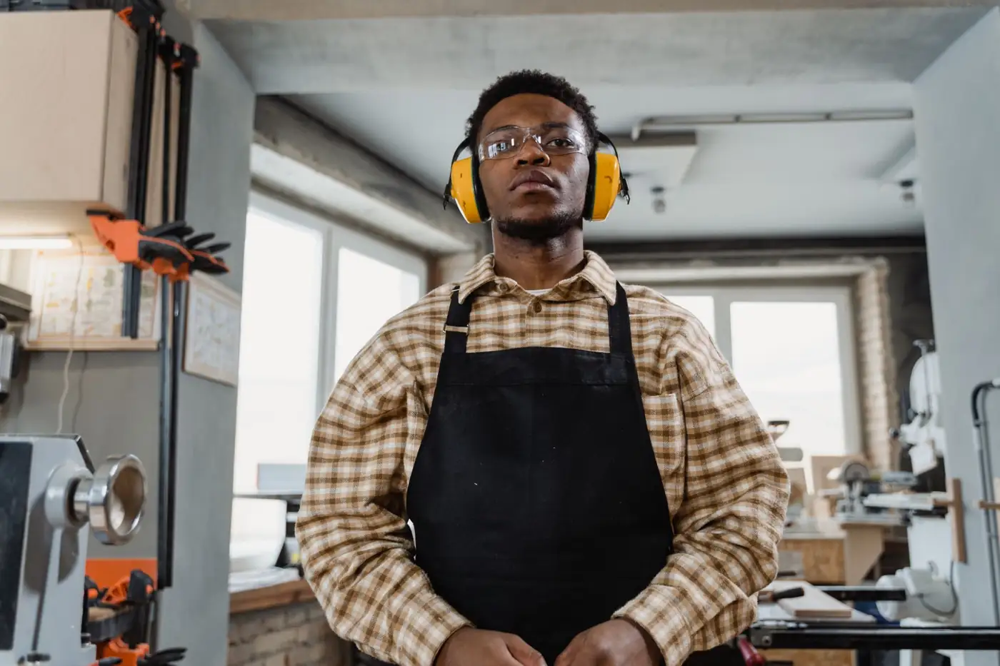
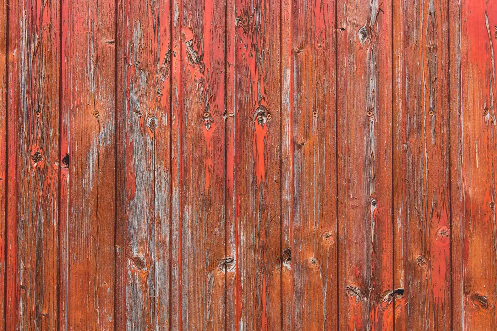
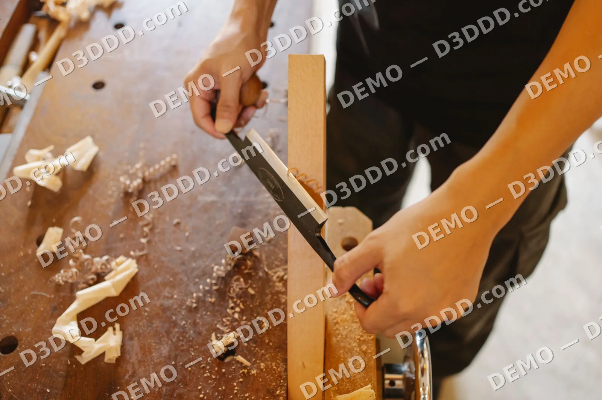
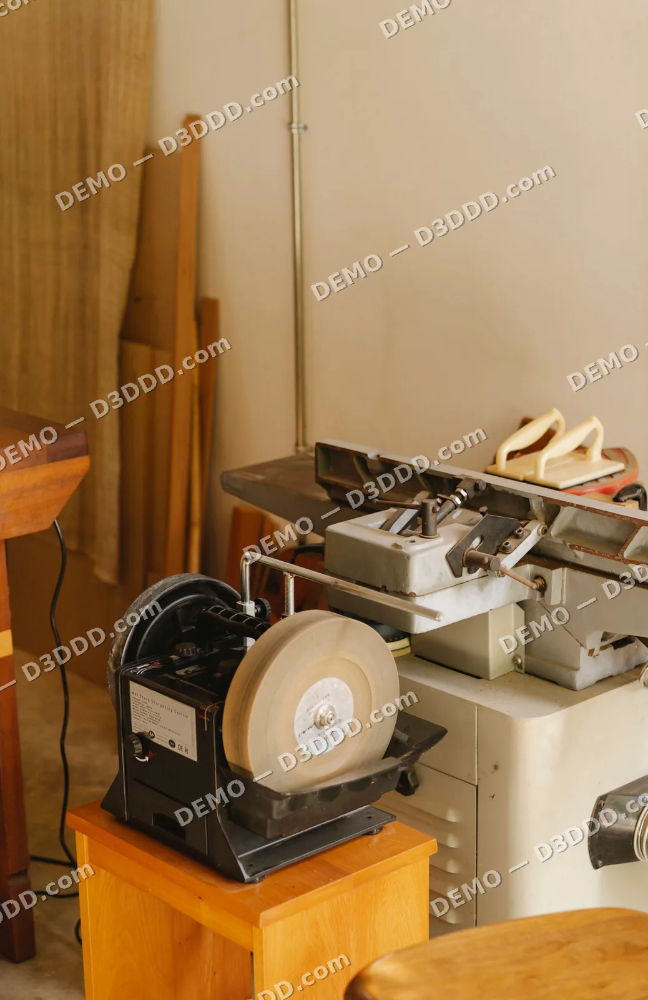

Home / Portfolio
Portfolio
Sample visuals showing the kind of joinery this theme presents.







All images are sample visuals for this theme demo.
Sectors we serve
Joinery for every space
Sample sectors — adapted to each client.
VillasApartmentsOfficesHospitality
Start your project